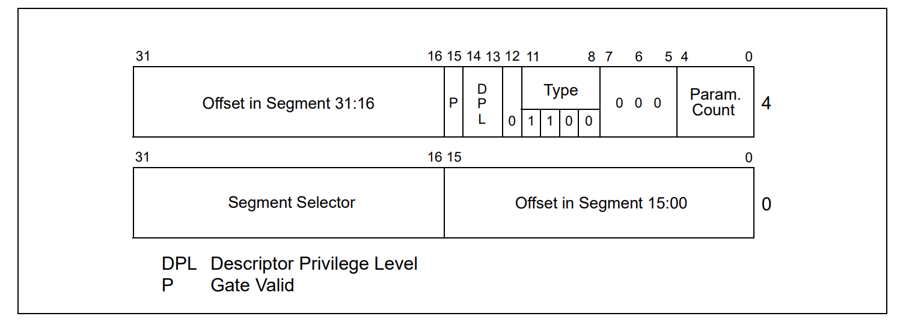
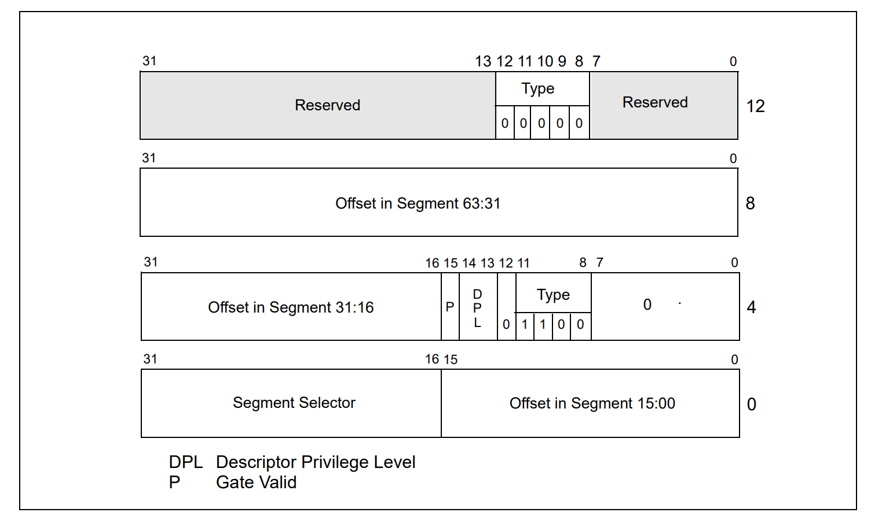
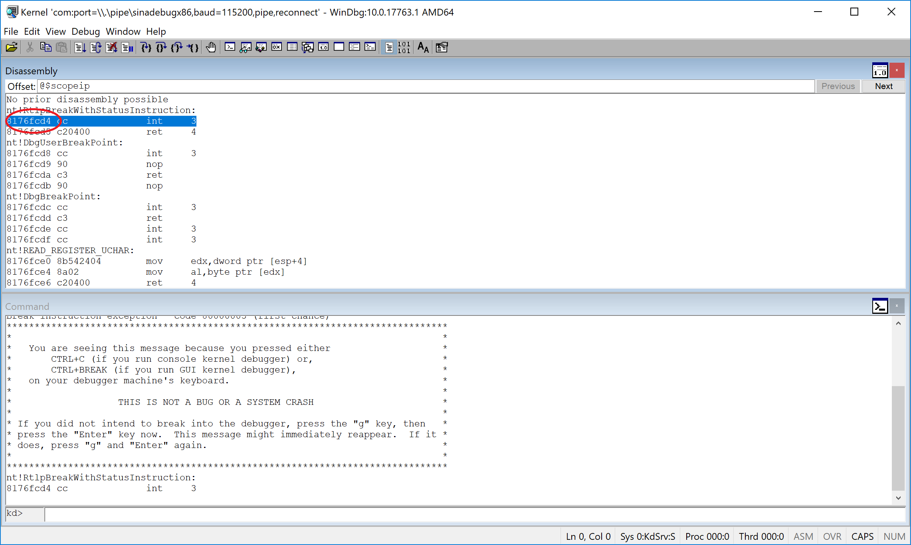
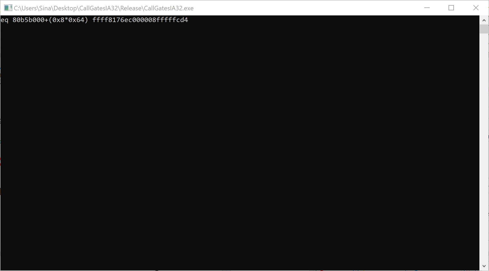
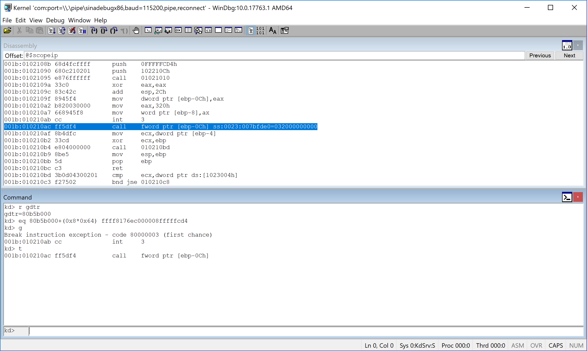

Have you ever thought how transitions between different rings performed?
Well, SYSENTER & SYSCALL used in modern OSs for transitioning between ring 3 to ring 0 but if there are other rings, then what’s Intel solution for entering them? The answer is call gates.
The rest of this topic described how to use call gates in modern processors.
80386 and its successors have 4 levels protections which isolate and protect user programs from each other and the operating system.
It offers an additional type of protection on a page basis, when paging is enabled(using U/S and R/W fields) .
There are 3 different types of privilege level checks when using call-gates:
Current Privilege Level (CPL)
Descriptor Privilege Level (DPL)
Requestor Privilege Level (RPL)
Current Privilege Level (CPL)
CPL is stored in the selector of currently executing CS register. It represents the privilege level (PL) of the currently executing task. It is also PL in the descriptor of the code segment and designated as Task Privilege Level (TPL).
Descriptor Privilege Level (DPL)
It is the PL of the object which is being attempted to be accessed by the current task or in the other words, the least privilege level for the caller to use this gate.
Requestor Privilege Level (RPL)
It is the lowest two bits of any selector. It can be used to weaken the CPL if desired.
The Effective Privilege Level (EPL) is EPL = max (CPL, RPL) (here numbers) Thus the task becomes less privileged.
Note that PL refers to Privilege Level.
Keep in mind that the above concepts also applies in other Intel structures
GDT Entries
GDT Stands for Global Descriptor Table. It contains some Segmentation Descriptors used in the age of memory segmentation and now it can be used to implement some segment change techniques like heavens gate.
In our case we use GDT as a table for our call gate descriptor. I didn’t see any use of call gates in Windows or Linux, by the way it’s a feature that exsits in processors. (Even in AMD64 and IA32e).
The GDT Entry Descriptor defined like this :
1
2
3
4
5
6
7
8
9
10
11
12
13
14
15
16
17
18
19
20
21
typedef struct _GDT_ENTRY {
UINT16 LIMIT15_0;
UINT16 BASE15_0;
UINT8 BASE23_16;
UINT8 TYPE : 1;
UINT8 SUBTYPE : 1;
UINT8 Accessibility : 1;
UINT8 Access : 1;
UINT8 S : 1;
UINT8 DPL : 2;
UINT8 PRESENT : 1;
UINT8 LIMIT19_16 : 4;
UINT8 AVL : 1;
UINT8 L : 1;
UINT8 D : 1;
UINT8 GRANULARITY : 1;
UINT8 BASE31_24;
}GDT_ENTRY, *PGDT_ENTRY;
For more information about GDT, you can read this article and also this osdev topic.
When the S flag is set to 0, the meaning of a GDT entry is quite different so it’s no longer a segment descriptor and now we can use this entry as a call-gate descriptor.
More information about call gates implementation, later in this topic.
Restricting Access to Data
Assume that a task needs data from the data segment. The privilege levels are checked at the time a selector for the target segment is loaded into the data segment register. Three privilege levels enter into privilege checking mechanism.
- CPL
- RPL of the selector of the target segment
- DPL of the descriptor of the target segment
Note that access is allowed only if DPL ≥ Max(CPL, RPL) and A procedure can only access the data that is at the same or less privilege level.
CALL & JMPs (Near vs Far)
The near forms of JMP and CALL transfer within the current code segment and requires only limit checking. The far forms of JMP and CALL refer to other segments and require privilege checking.
The far JMP and CALL can be done in 2 ways:
- Without Call Gate Descriptor
The processor permits a JMP or CALL directly to another segment only if :
1. DPL of the target segment = CPL of the calling segment
2. Confirming bit of the target code is set and DPL of the target segment ≤ CPL
Confirming Segment: These segments may be called from various privilege levels but execute at the privilege level of the calling procedure. (e.g. math library)
- With Call Gate Descriptor
The far pointer of the control transfer instruction uses the selector part of the pointer and selects a gate. The selector and offset fields of a gate form a pointer to the entry of a procedure.
Ring Transitioning
When CPU fetches a far-call instruction, it will use that instruction’s ‘selector’ value to look up a descriptor in the GDT (or in the current LDT).
If it’s a ‘call-gate’ descriptor, and if access is allowed (i.e. if CPL ≤ DPL), then the CPU will perform a complex sequence of actions which will accomplish the requested ‘ring-transition’. CPL (Current Privilege Level) is based on least significant 2-bits in register CS (also in SS)
- pushes the current SS:SP register
- values onto a new stack-segment-
- copies the specified number of parameters from the old stack onto the new stack
- pushes the updated CS:IP register-values onto the new stack
- loads new values into registers CS:IP (from the call gate descriptor) and into SS:SP
Where do the new values for SS:SP come from? (They’re not found in the call-gate)
They’re from a special system-segment, known as the TSS (Task State Segment). The CPU locates its TSS by referring to the value in register TR (Task Register).
Return to an Outer Ring
- Use the far-return instruction: ‘lret’
- Restores CS:IP from the current stack
- Restores SS:SP from the current stack
- Use the far-return instruction: ‘lret $n’
- Restores CS:IP from the current stack
- Discards n parameter-bytes from that stack
- Restores SS:SP from that current stack
Call-Gate Descriptor
Intel defines a call-gate descriptor like this (in x86 environment):

1
2
3
4
5
6
7
8
9
10
11
12
13
14
15
16
typedef struct CALL_GATE32 {
int offset0_15 : 16;
int selector : 16;
union {
struct {
int argCount : 5;
int zeros : 3;
int type : 4;
int sFlag : 1;
int dpl : 2;
int pFlag : 1;
} part;
unsigned __int16 all;
} dummy;
int offset16_31 : 16;
}CALL_GATE32, *PCALL_GATE32;
- P = present (1 = yes, 0 = no)
- DPL = Descriptor Privilege Level (0, 1 ,2 ,3)
- Code-selector (specifies memory-segment containing procedure code)
- Offset (specifies the procedure’s entry-point within its code-segment)
- Parameter count (specifies how many parameter-values will be copied)
- Gate-Type (‘0x4’ means a 16-bit call-gate, ‘0xC’ means a 32-bit call-gate)
The above descriptor is also available in AMD64 and it defines like the following picture.

1
2
3
4
5
6
7
8
9
10
11
12
13
14
15
16
17
typedef struct CALL_GATE
{
unsigned __int32 offset0_15 : 16;
unsigned __int32 selector : 16;
union {
struct {
unsigned __int16 ist : 3;
unsigned __int16 ignored : 5;
unsigned __int16 type : 5;
unsigned __int16 dpl : 2;
unsigned __int16 p : 1;
} part;
unsigned __int16 all;
} dummy;
unsigned __int64 offset16_63 : 48;
unsigned __int32 reserved : 32;
}CALL_GATE, *PCALL_GATE;
Call gates facilitate controlled transfers of program control between different privilege levels. They are typically used only in operating systems or executives that use the privilege-level protection mechanism. Call gates are also useful for transferring program control between 16-bit and 32-bit code segments
Now, let’s see different types of entries that can be used in GDT Entries (the “type” field of above descriptors).
- Bits 3 2 1 0 : Type of the entry
- 0000 - Reserved
- 0001 - Available 16-bit TSS
- 0010 - Local Descriptor Table (LDT)
- 0011 - Busy 16-bit TSS
- 0100 - 16-bit Call Gate
- 0101 - Task Gate
- 0110 - 16-bit Interrupt Gate
- 0111 - 16-bit Trap Gate
- 1000 - Reserved
- 1001 - Available 32-bit TSS
- 1010 - Reserved
- 1011 - Busy 32-bit TSS
- 1100 - 32-bit Call Gate
- 1101 - Reserved
- 1110 - 32-bit Interrupt Gate
- 1111 - 32-bit Trap Gate
Implementation
Enough for theory, let’s see how we can use them in a real environment.
The full source code is available on Github:
[https://github.com/SinaKarvandi/IA32-CALL-GATES]
After defining the above structures, now we need to declare a structure with the following assumptions.
Selector field should be 0x8 (pointing to KGDT_R0_CODE entry of GDT). As I told you about the type it should be 0xc and the minimum ring that can invoke this call-gate is (dpl = 0x3 (user-mode)) and of course, it’s present in memory.
The address should be divided into two 16 bit parts.
The following function is responsible for making a Windbg command that can be executed in order to defined a call-gate. Of course you can do the same thing using a kernel mode driver.
Note that address is the kernel handler function, gdtr is the result of “r gdtr” and GDTIndex is the GDT index that we want to modify.
1
2
3
4
5
6
7
8
9
10
11
12
13
14
15
16
17
18
19
20
21
22
void CreateCallGateStruct(int address , int gdtr , int GDTIndex) {
CALL_GATE32 callgate32 = { 0 };
callgate32.dummy.part.zeros = 0x0;
callgate32.selector = 0x8;
callgate32.dummy.part.type = 0xc;
callgate32.dummy.part.sFlag = 0x0;
callgate32.dummy.part.dpl = 0x3;
callgate32.dummy.part.pFlag = 0x1;
callgate32.offset0_15 = 0x0000ffff & address;
address = address >> 16;
callgate32.offset16_31 = 0x0000ffff & address;
printf("eq %x+(0x8*0x%x) ", gdtr , GDTIndex);
printf("%04x", callgate32.offset16_31);
printf("%04x", callgate32.dummy.all);
printf("%04x", callgate32.selector);
printf("%04x", callgate32.offset0_15);
}

Let’s execute the above code and see the results.
1
2
3
4
5
6
7
8
9
10
11
12
13
14
15
16
17
18
19
20
21
// Making windbg structure
int DispatcherAddress= 0x8176fcd4;
int gdtr = 0x80b5b000;
int GdtIndex = 0x64;
CreateCallGateStruct(DispatcherAddress, gdtr, GdtIndex);
unsigned short callGate[3];
callGate[0] = 0x0;
callGate[1] = 0x0;
callGate[2] = 0x320;
// Invoke the far call
__asm { int 3 }
__asm
{
call fword ptr[callGate];
}
The final result is :
1
eq 80b5b000+(0x8*0x64) ffff8176ec000008fffffcd4

If you look more precisely at the above code, you can see that, the last part is the definition of callGate array. This array chooses GDT index which your call-gate descriptor is located.
I choose 320 because the segment selector defines like this :
1
2
3
4
5
6
15 3 2 0
+--------------------------------------------------+----+--------+
| Index | TI | RPL |
+--------------------------------------------------+----+--------+
TI = Table Indicator: 0 = GDT, 1 = LDT
We select 320 (10100’0’000), RPL (000) TI (0 because our descriptor is on GDT, not LDT), the index is 100 (0x64 or 10100 in binary).
The last part is executing our FAR CALL. After the execution of this call we will be in our dispatcher address with Kernel Privilege Level. By now you should be aware of how to go to other rings (e.g ring 1,2) by modifying the above structures and the selectors.

The last thing is you should handle this situation and finally return to the previous rings using lret.
That’s it.
Conclusion
In this topic, we see how transitions between different rings are performed in our processor, even if almost all of the modern OSs don’t use this mechanism. For more i.formation you can review the following references.
References
[1] Intel 64 and IA-32 Architectures Software Developer’s Manual Vol. 3A – Chapter 5 – (5.8.3 Call Gates) (https://software.intel.com/en-us/articles/intel-sdm)
[2] Intel 64 and IA-32 Architectures Software Developer’s Manual Vol. 3A – Chapter 5 – (5.8.4 Accessing a Code Segment Through a Call Gate) (https://software.intel.com/en-us/articles/intel-sdm)
[4] 80386DX - (https://slideplayer.com/slide/9375765)
[5] Processor Privilege Levels - (https://slideplayer.com/slide/1652112)
[6] The Real, Protected, Long mode assembly tutorial for PCs - (https://www.codeproject.com/Articles/45788/The-Real-Protected-Long-mode-assembly-tutorial-for)
[7] Hooking the GDT - Installing Call gates - (https://github.com/David-Reguera-Garcia-Dreg/cgaty)
[8] The rootkit arsenal book – (https://www.amazon.com/Rootkit-Arsenal-Escape-Evasion-Corners/dp/1598220616)
[9] Bringing Call Gates Back – (http://www.alex-ionescu.com/?p=340)
[10] Descriptor tables in kernel exploitation – (https://j00ru.vexillium.org/2010/01/descriptor-tables-in-kernel-exploitation-a-new-article/)
Comments powered by Disqus.